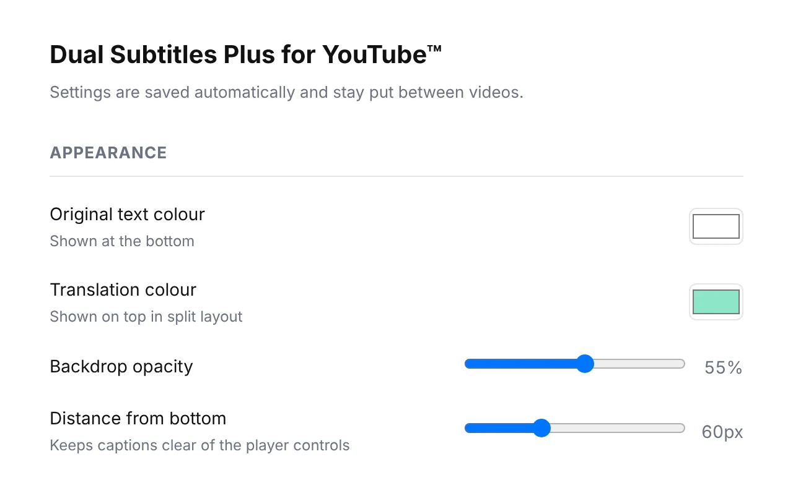

Hình trên: bản dịch ở trên, bản gốc ở dưới. Hình dưới: cả hai dòng được xếp ở phía dưới.

Cửa sổ bật lên: chọn ngôn ngữ, bố cục và cỡ chữ.

Thêm cài đặt: màu sắc, nền và khoảng cách từ mép dưới.
TÍNH NĂNG
- Phụ đề song ngữ — xem cùng lúc phụ đề gốc của video và phụ đề bằng một ngôn ngữ khác.
- Bố cục linh hoạt — phụ đề dịch ở trên, phụ đề gốc ở dưới hoặc cả hai xếp thành hai dòng ở phía dưới. Hai dòng phụ đề không chồng lên nhau.
- Tùy chỉnh hiển thị — điều chỉnh cỡ chữ, màu sắc và vị trí. Ngôn ngữ và cách hiển thị bạn chọn được giữ nguyên khi chuyển sang video khác.
- Không cần tài khoản bổ sung hay khóa API.
CÁCH HOẠT ĐỘNG
- Phụ đề gốc — YouTube và Netflix: sử dụng phụ đề có sẵn của video. Nếu video không có phụ đề, tiện ích sẽ thông báo.
- Phụ đề dịch — YouTube: sử dụng tính năng dịch tích hợp của YouTube. Netflix: sử dụng phụ đề Netflix bằng ngôn ngữ bạn chọn nếu có. Nếu không, Chrome sẽ dịch phụ đề hiện có trực tiếp trên thiết bị của bạn, với các ngôn ngữ được hỗ trợ (39 ngôn ngữ).
- Bắt đầu — YouTube: không cần thiết lập thêm. Netflix: chỉ lần đầu, mở tiện ích, chọn "Bật cho Netflix" rồi cấp quyền truy cập.
- Quyền riêng tư — tiện ích không gửi bất kỳ dữ liệu nào ra bên ngoài: không máy chủ, không tài khoản, không phân tích hoạt động sử dụng. Tùy chọn của bạn được lưu trong trình duyệt.
CẦN BIẾT
- Ngôn ngữ giao diện: English, 한국어, 中文 (简体 / 繁體), Português, Español, Türkçe, Tiếng Việt, 日本語, Français và العربية.
- Chất lượng bản dịch phụ thuộc vào YouTube, Netflix hoặc Chrome, không phải tiện ích này.
Câu hỏi thường gặp
- Làm sao để hiển thị hai phụ đề cùng lúc trên YouTube?
- Mở một video có phụ đề, rồi chọn ngôn ngữ trong mục "Dịch sang" ở cửa sổ bật lên của tiện ích. Không cần thiết lập gì thêm.
- Tôi có thể đặt bản dịch ở trên và bản gốc ở dưới không?
- Có, hoặc bạn có thể xếp cả hai ở phía dưới.
- Tôi có thể thay đổi kích thước, màu sắc và vị trí phụ đề không?
- Có. Trong cửa sổ bật lên, chọn "Bố cục" và "Cỡ chữ". Để điều chỉnh thêm, hãy nhấp vào "Thêm cài đặt" trong cửa sổ bật lên: màu riêng cho bản gốc và bản dịch, độ mờ đục của nền và khoảng cách từ mép dưới.
- Các cài đặt có được giữ nguyên ở video tiếp theo không?
- Có. Ngôn ngữ, bố cục, kích thước và màu sắc được giữ nguyên ở video tiếp theo trên cả YouTube và Netflix.
- Tôi có cần tài khoản hoặc khóa API không?
- Không.
- Phụ đề hoặc dữ liệu của tôi có được gửi đi đâu không?
- Không. Không có máy chủ hay công cụ phân tích; các cài đặt được lưu trong trình duyệt của bạn.
- Tiện ích có hoạt động với video chỉ có phụ đề tự động tạo không?
- Có. Nhưng phụ đề do YouTube tự động tạo được dịch kém chính xác hơn phụ đề do nhà sáng tạo viết.
- Làm sao để bật phụ đề kép trên Netflix?
- Lần đầu tiên, hãy nhấn "Bật cho Netflix" trong cửa sổ bật lên của tiện ích và cho phép truy cập. Sau đó, tiện ích sẽ tự hoạt động. Chrome chỉ yêu cầu quyền truy cập Netflix vào thời điểm đó và bạn có thể từ chối; YouTube vẫn hoạt động khi không có quyền này.
- Tại sao nội dung trên Netflix không hiển thị hai dòng phụ đề?
- Bạn chưa nhấn "Bật cho Netflix" trong cửa sổ bật lên, nội dung không có phụ đề, hoặc phụ đề là hình ảnh chứ không phải văn bản nên không đọc được. Cửa sổ bật lên sẽ cho biết đó là trường hợp nào.
- Nếu Netflix không có phụ đề bằng ngôn ngữ của tôi thì sao?
- Chrome dịch phụ đề ngay trên thiết bị của bạn (39 ngôn ngữ, ở những môi trường được hỗ trợ). Tính năng này cần phiên bản Chrome đã được cập nhật. Lần đầu bạn sử dụng một ngôn ngữ, Chrome sẽ tải ngôn ngữ đó xuống một lần.
- Tiện ích có hoạt động trên Disney+, Prime Video hoặc các trang khác không?
- Không. Tiện ích chỉ hoạt động trên YouTube và Netflix.
- Tiện ích khác Language Reactor như thế nào?
- Dual Subtitles Plus được thiết kế để sử dụng đơn giản. Chọn một ngôn ngữ và hai dòng phụ đề sẽ xuất hiện trên YouTube và Netflix — không cần tài khoản, không cần khóa API, không cần học thêm thao tác mới. Một lựa chọn dễ sử dụng cho người muốn học bằng phụ đề kép.
- Tiện ích có hoạt động trên điện thoại thông minh không?
- Không. Đây là tiện ích dành cho Chrome trên máy tính.
- Tiện ích có làm chậm trình phát không?
- Các bản phụ đề được tải về một lần cho mỗi video và hiển thị ngay trên thiết bị, nên việc phát video không bị ảnh hưởng.
- Tôi có thể tạm thời tắt tiện ích không?
- Có, bằng công tắc ở đầu cửa sổ bật lên. Phụ đề của chính YouTube sẽ hoạt động bình thường trở lại ngay khi tiện ích được tắt.